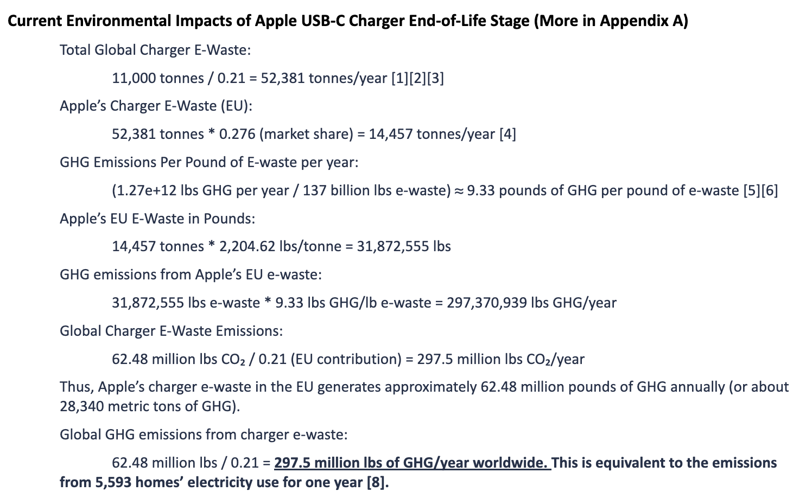
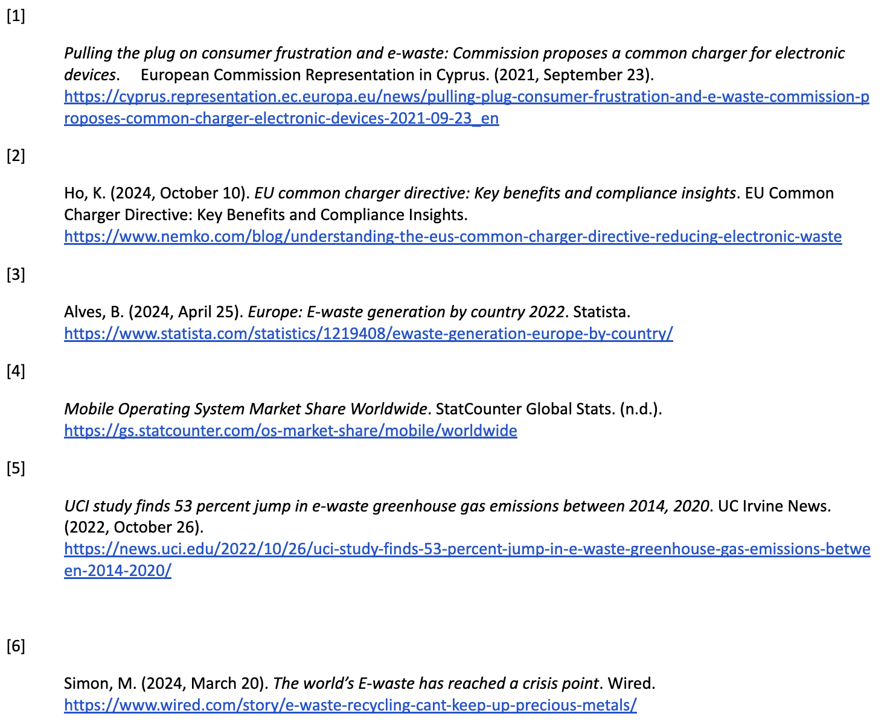
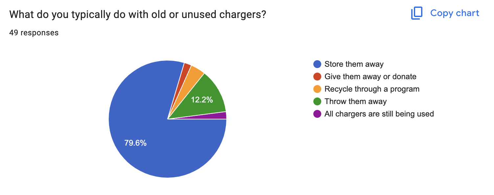
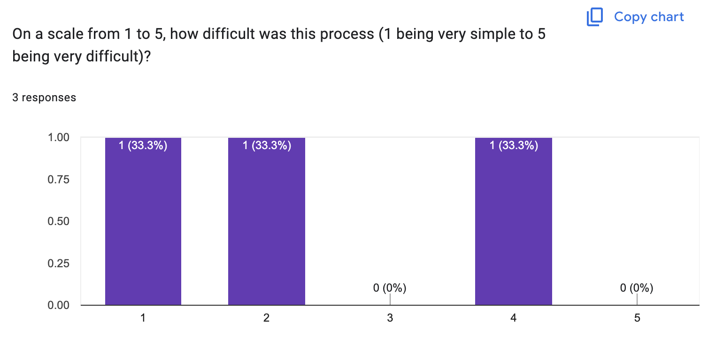
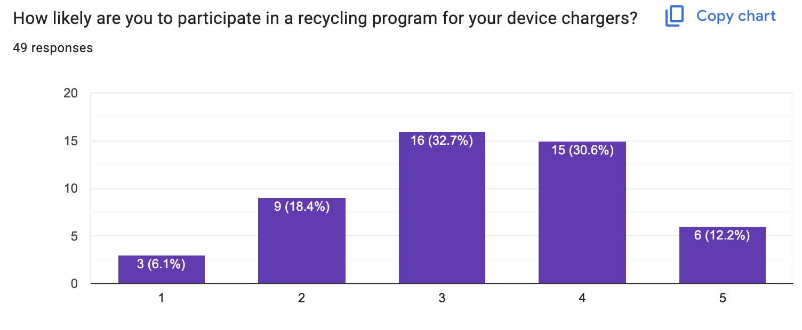
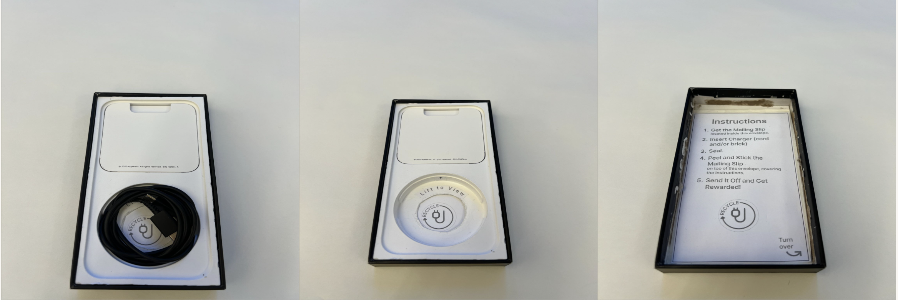
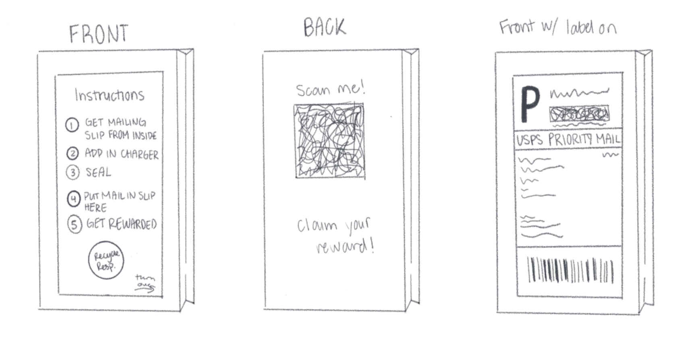

Projects and Experiences
Charge Forward: Cleaner Future
Introduction
This project consisted of myself and three other team members. We were tasked
with managing interdisciplinary roles in our mission to redesign a product or
service with sustainability as the priority. I came up with the concept of exploring the
e-waste impact of chargers after I lost my laptop charger in the school libary, prompting me to
explore what happens to chargers when they are lost or forgotten. I conducted some surface
level research on the impact of charging cables and bricks attributing to global waste and
figured that there could be a potential market for recycling programs focused on reducing charger
e-waste. I pitched this idea to my team members and we agreed to delve deeper into this focus area.
Methods & Data Collection
ONLINE SOURCES My first action as a researcher was to research the impact that old and unused chargers were having
on the environment in terms of their annual global emissions. I used six relavent articles concerning
global e-waste to back up my own personal calculations. All of the articles used in this step of the research were either written by
a reputable author or belonged to a government agency. They were all published in the last four years.


Finding that chargers attributed to 297.5 million lbs of GHG/year worldwide,
my team and I conducted a life cycle analysis on the product to find out what factors might contribute
to this statistic. Since user habits are the main contributer to e-waste, specifically regarding phone
and laptop chargers, I drafted several questions to further study how people were addressing the end of life stage
of their chargers and devices.
INTERVIEWS: We conducted four user interviews with people that we knew owned electronic
devices. Here we focused on gathering personal insights from individual users to help guide
our survey questions. It was important for us to keep this to a casual conversation style because
we wanted to gather honest and truthful accounts from our interviewees. Despite that, we wanted to
lead the conversation off with questions that could lead to a valuable and insightful conversation regarding the topic.
These are a couple of the answers we recieved in our interviews.
Question: "What are some reasons you might not recycle an old charger?"
Answer: "If it's not broken. We have a couple of Samsung chargers even though nobody has a Samsung device, just in
case we get one or if something breaks and we need a replacement. So if it's not broken, I’d keep it."
Question: "What would motivate you to recycle a charger instead of keeping it or throwing it away?"
Answer: "I guess if it was more easily accessible finding where to recycle or the process because I know that you can recycle that,
like warehouses are like recycling stations, but they're also really far and not very easily accessible. So having somewhere closer
by would make me recycle my chargers."
SURVEYS: We recieved 49 responses in our survey data as we were trying to gather more data about user behavior
regarding reycling and disposal habits. Our questions were derived from topics of interest disovered during our user interviews. These are
several results that we recieved in our survey data.



User Research Findings
Through our interview insights and our survey responses, we were able to group our responses into three categories of interest:
CONVENIENCE:
“Maybe making it so I don't have to
go as far, because I think, like, the nearest Apple Store near me [...] is like a
30 minute drive”
"Maybe if they had something that says, ‘Oh, when you're done using it, recycle it here’ or ‘scan this QR link to find the
nearest recycling location.’ That would make it a lot easier. “
“I guess if it was more easily accessible finding
where to recycle or the process because I know that you can recycle that, like warehouses are like recycling stations, but they're
also really far and not very easily accessible."
“The more convenient, the better. For example, if I could just return it at
various places and having many platforms accepting it, it would increase my willingness to return it for recycling.”
INCENTIVE:
“Yes, I love a
good discount. If recycling my charger gave me 5% off a new one, I’d definitely recycle my chargers to save money."
“Incentives like
money [would make me more likely to recycle my old chargers]”
“I would be willing to spend my time to send it directly back to target or apple to get the
benefits of recycling it correctly.”
“People do not care as much about the environment. If there is a
10% off discount on annual apple music, I think it sounds good. I also think Apple could collaborate with other companies like McDonald’s to redeem
$10 off or get a free ice cream. It is fine even if it is a
small reward.”
LACK OF AWARNESS:
“If [a recycling program] exists, spread the word because
I have no idea where it is.”
“If I knew they existed??”
“People in general don’t know much about how much carbon footprint it takes for chargers… I think it is important to learn to manage your own footprint, but
there hasn't been a lot of information on it.”
“I like to hold onto my unused chargers because
I don't know where to recycle...”
"I'm not very aware… but I don’t know the specific details. I think it’s a recycling center, but
I don’t even know where a recycling center is or when they take it and how you give it to them."
The grouping of responses was a crucial element that we used to inform our prototype redesign. We used certain elements of these responses to insipire both our phyical and digital design.
Prototype
For our physical prototype, we proposed packaging with a prepaid mail-back envelope for easy at-home recycling (for convenience) and a discount on select services to increase participation and awareness.
Since Apple has a 17% market share in smart phones, as well as recently moving away from their decade old lightning port chargers, we thought they would be the perfect candidate for this redesign.
The mailing envelope will be included in every new iPhone model's box. The recycling logo will be visible under the compartment in which the charging cable sits. Once the user removes the cable from the compartment they will be
prompted to lift the plastic tray out to access the envelope.

Pictured at the 'FRONT' of our envelope are the mailing instructions the user can follow to ship their chargers back.
When you turn the envelope to the 'BACK' you will see a QR code that directs you to an information page that goes into detail on the recycling process and how you can redeem your reward.
There will already be a mailing slip inside of the envelope.

Reflection
Our team presented our final redesign to a class of students along with several industry experts, who asked questions and gave feedback on the design.
A key limitation or challenge we might encounter in implementing our redesign is that while surveys and interviews suggest users are interested in recycling chargers for the proposed incentive, this may not translate to actual behavior in real-world scenarios.
This was a three month project in total. Through those three months I was able to acquire various research and prototyping skills that I showcased in this project. The sustainable design industry is one that has been steadily rising over time and with the
emergence of new technologies, sustainable practice are crucial to preserving our planet.